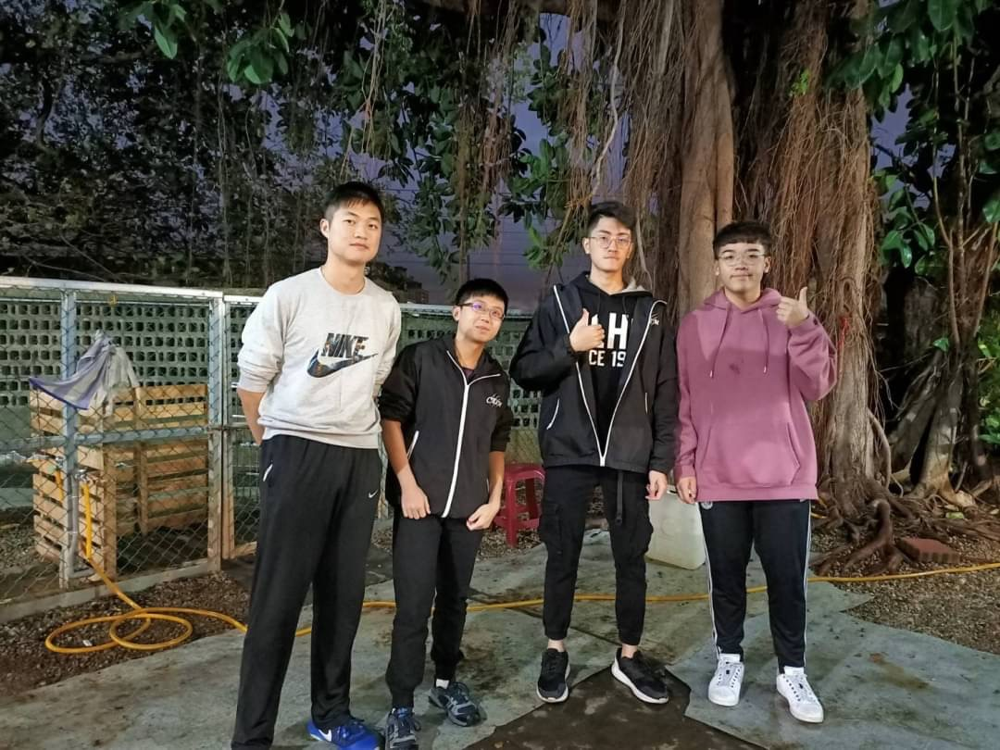
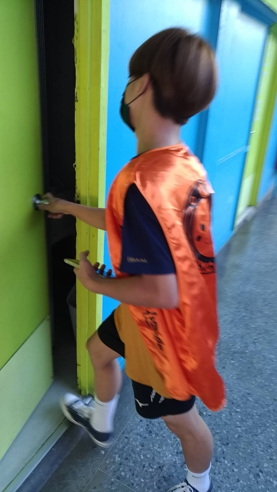

我的個人網站
首頁
技能
經歷
聯絡資訊
自我介紹：
大家好，我是吳柏翰，來自台中市。我喜歡爬山，每次爬山都讓我沉浸在山上的新鮮空氣和美景中，感覺像是一次又一次快樂的旅行。現在的目標是學好 HTML 和 CSS。雖然大二時學習得不夠用心，但我很快就意識到它們的實用性。現在我在教官室打工，我發現能透過精美的靜態網頁，像新生傳遞重要的資訊。未來我想成為 HTML 的大師！
志工服務:
大一上我跟同學去學校收留流浪狗的社團服務，幫他們打掃狗窩的環境。我們體驗到了不少養流浪狗的困難，包括清洗狗盤、掃狗糞等等。還有許多小細節，例如有些狗比較兇殘，這時就必須要給這些狗劃一個自己的隔離區。這個區域由於比較危險，社團人員並沒有讓我們進去，畢竟那些狗不認識我們，一不小心就會被他們攻擊呢!

企業經營:
大一下我們有一堂必修課「企業概論」，我們要分組作報告，模擬自己組是一個企業。我在這個小企業中擔任人事長，但做報告不會有人事異動啊，所以我主要的工作是紀錄我們每周的例行性會議，我一開始不太會打會議紀錄，經過了一個學期，我的文字能力有很大的提升。圖是我們組別負責義賣的產品: 雪Q餅。
宿舍幹部:
大一下，當同學都在找房子時，我因為不想通勤，所以選擇留在力行宿舍擔任幹部。我在當任幹部時遇到很多奇葩的故事，比如有住宿生為了拿外送選擇爬牆拿餐點，結果被記10點等等。反正是一個又一個好笑又無言的故事。圖是我們去看住宿生的地震演習有沒有確實躲到桌子下方。
